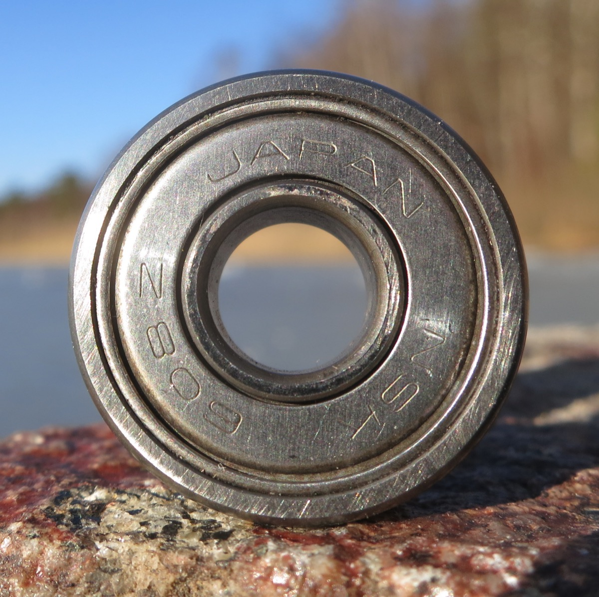
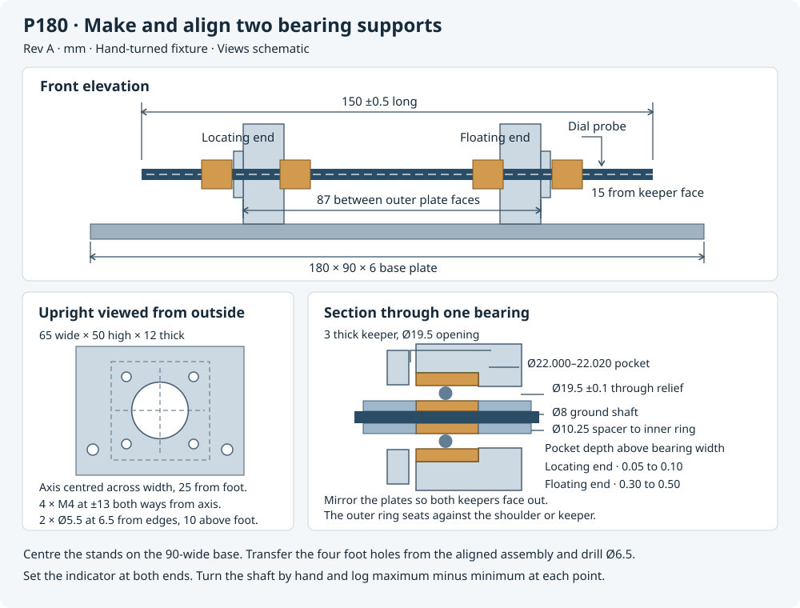

Make and align a blower shaft and bearing fixture
Machine two bearing seats, cut the keepers and spacers, and align a ground shaft on a plate you can bolt down. Use this hand-turned fixture to learn the fits and runout checks needed before laying out a blower rotor.


Photo by R. Henrik Nilsson, resized. Original photograph · CC BY 4.0.

Watch before machining the seats. Follow the gauge zero and rocking motion in the first video. The second shows which bearing ring takes assembly force in a larger press-fit example. This exercise uses a hand slip fit with a much smaller bearing. Bombay Tools · How to use a bore gauge · Acorn Industrial · Bearing-ring support during fitting.
Buy the bearings and quote the machined parts
Prepare the drawing and take the actual bearing pair to the machinist. The left support locates the shaft axially. The right support lets the outer ring move along the axis so machining variation does not squeeze the two bearings together. Run this version by hand with the shaft bare.
| Quantity and part | Purchase or fabrication specification | India source and shop check |
|---|---|---|
| 2 · SKF 608-2RSH bearings View bearing | Sealed deep-groove ball bearing, 8 mm bore × 22 mm outer diameter × 7 mm nominal width. Record the actual width of each outer ring. Keep the bearings clean and retain their lot markings. | Moglix · ₹368 each including GST · SKF drawing and abutment dimensions. |
| 1 · Ground shaft View ground shaft | Nominal Ø8 g6 × 150 ±0.5 mm, with burr-free ends. For the listed collars, select a measured diameter of 7.987–7.995 mm at the bearing seats and clamp positions. Check both real bearings for a clean finger slip fit. If buying hard stock, ask the shop to cut it to length by abrasive cutting or grinding, then face and chamfer it without overheating. | MISUMI India · Configure SFJ8, length 150 mm · MISUMI · Shaft tolerances · RoboticsDNA, Pune · 330 mm stock at ₹440 incl. GST, before machining. |
| 4 · Ruland MCL-8-F collars View collar | One-piece split clamp, Ø8 bore, Ø18 outside and 9 mm long. Obtain a 2.5 mm hex torque bit or wrench. Ruland calls for 2.1 N·m screw seating torque. | RS India · Quote stock 174-6729 · RS · Product photo and dimensions · Ruland · Installation. |
| 4 · Turned inner-ring spacers View steel stock | EN8 or C45 bright steel, 12 mm bar offcut. Turn each spacer to Ø10.25 ±0.10 outside, Ø8.12 ±0.03 inside, and 6.0 ±0.1 long. Break contact-face edges by up to 0.2 mm. Check the spacer on the bearing before duplicating it. | T. T. & Sons, Mumbai · EN8 enquiry · YesBatch · Stock photo. Ask a local lathe shop for four pieces using an offcut. |
| 1 set · Plates, angle and feet View plate stock | 6061-T6 base 180 × 90 × 6 mm. Two 65 × 50 × 12 mm finished uprights and two 38 × 38 × 3 mm keepers. Cut four 12 mm-long feet from 20 × 20 × 3 mm aluminium angle. Keep thin metal shims for alignment. | Solitaire Steel, Mumbai · Plate offcut quote and photo · DG Metals · Cut plate enquiry. Quote the four bored or drilled plates separately from material. |
| 1 set · Screws, washers and locknuts View screw | Eight M4 × 10 keeper screws and flat washers, four M5 × 25 upright-to-foot screws, four M5 × 16 base screws and eight M5 locknuts with matching flat washers. Check clearance under the base before bolting the trainer to the bench. | RS India · Keeper screw, stock 281-221. Ask a local fastener counter for small quantities. |


The listed bearing pair costs ₹736 including GST. Add ₹440 for the cut-to-length stock option for a ₹1,176 subtotal before machining, freight, collars, plates and screws. Prices checked on 22 November 2026. For a one-off quote, give shops the same drawing and ask for stock, turning, boring, measuring and tax as separate lines.
Set up machines and measuring tools
| Tool | Use on this build | Source and price |
|---|---|---|
| Mill or lathe and a drill press View lathe View drill press | Machine the pilot and pocket in one setup with a fine boring tool. For the secondary holes use spot drill, 3.3 mm drill for M4 × 0.7 tap, and 4.5, 5.5 and 6.5 mm clearance drills. Add a square, deburrer, a small torque tool and rigid workholding. | Ask a local machine shop to quote both uprights together. Lathe photo · Sunnybansodeva, CC BY-SA 4.0 · Drill press photo · Plbcr, CC BY-SA 3.0. |
| Shaft micrometer and bore comparator View micrometer View bore gauge | Read the shaft to 0.001 mm with a verified micrometer. Use a calibrated shallow-bore gauge or limit plug gauges that fit the pocket. Check the bore in two directions at two depths where the gauge permits. Use a depth micrometer or calibrated indicator bridge for pocket depth. | ToolBuy · 293-240-30, ₹9,841.20 incl. GST · Moglix · Mitutoyo 511-701 family example. Confirm the indicator, reach and 22 mm setting master separately. |
| Dial indicator and rigid stand View indicator | Mitutoyo 2046A, 0.01 mm graduation for screening. Use a finer calibrated indicator for decisions near the limit. Clamp the stand and trainer to one rigid bench or use a common steel plate for a magnetic stand. | Yuzuki · 2046A product photo · IndustryBuying · Check current prices · Mitutoyo · Indicator types. |


Borrow calibrated gauges or have the boring shop provide a first-piece inspection report if this is the only fixture you are making. Give them the numbers below so they can quote the actual inspection.
Machine and assemble the fixture


- Square the upright bottom and side edges. Reference the bearing centre at half the width and 25.0 mm above the bottom. Mark the upright orientation and the outward face before drilling. Spot, drill undersize, finish the Ø19.5 ±0.1 mm through relief and bore the Ø22.000–22.020 mm pocket from the outside in one indicated setup. Leave the shoulder square and keep the inside corner radius at or below 0.2 mm.
- Measure width B on each outer ring. Finish the left pocket at B + 0.05 to 0.10 mm and the right pocket at B + 0.30 to 0.50 mm. For a measured width of 6.98 mm, these are 7.03–7.08 mm and 7.28–7.48 mm respectively. Check diameter and depth before removing the setup. Label the pockets L and R and record each matched bearing.
- Drill and tap four M4 holes through each upright at ±13 mm horizontally and vertically from the axis. Drill each keeper at the same coordinates for Ø4.5 mm clearance, then make a centred Ø19.5 ±0.1 mm opening. Leave the contact faces flat. With the keeper seated, the outer ring can touch its shoulder or keeper as it moves. Inspect the inner ring, seals and spacers for free clearance.
- Make the four angle feet with Ø5.5 mm clearance in both legs. Match the upper holes to the upright holes at 6.5 mm in from the sides and 10 mm above the foot. Put the angle legs and locknuts on the inside of the stands. Trial-fit the bolts to check wrench access and that the horizontal legs clear the other hardware.
- Clean the pockets, shaft, rings and spacers. The bearings should slide in with finger force. For a tight fit, find the burr, oversize shaft or undersize pocket and correct the part before assembling. Test the right outer ring through its available axial travel with the keeper off and confirm the seal clears throughout. Turn the individual bearings by hand and feel for grit or roughness.
- Place upright outer faces at 45 and 132 mm from the base end, with both shaft centres on the 45 mm line across the base. The keepers face outward. Thread the shaft through the first bearing, two inner spacers and collars and the second bearing. Arrange the feet so the shaft glides through both bearings without using the bolts to pull the plates into alignment. Transfer the base holes, remove the plates before drilling Ø6.5 mm and deburr. Refit loosely, repeat alignment, then tighten the feet progressively. Use flat metal shim under the feet if necessary.
- Fit the left keeper. Slide the outboard spacer and collar onto the shaft. Adjust its inboard and outboard spacers to touch the left inner ring with light contact and clamp their collars with the groove side towards the spacer. At the right support, use a depth probe or bridge before fitting the keeper to centre the bearing about halfway between its shoulder and keeper. For a 0.40 mm pocket allowance, the outer face should sit about 0.20 mm below the upright face. Hold that position as you set its inboard spacer and collar, then fit the right keeper, spacer and outer collar. Tighten each specified collar to 2.1 N·m while keeping the shaft free to turn. Confirm that each spacer clears the seal and that the keepers seat flush.
Measure and record alignment
- Before assembly, roll the bare shaft on two clean V-blocks and record runout at each bearing seat. After assembly, place the dial tip perpendicular to the shaft 15 mm outside each keeper. Use a little indicator travel in both directions. Turn the shaft slowly by hand, record minimum and maximum over two revolutions, then subtract minimum from maximum for total indicated runout.
- As a first-piece screening target use 0.05 mm TIR or less at both probe points. For example, +0.02 mm and −0.01 mm give 0.03 mm TIR. Repeat with a finer calibrated indicator if the decision is close to the limit. If the reading grows when the feet or collars are tightened, relax one joint at a time and inspect the burrs, the plate squareness and the matched bearing fits.
- Put the indicator against a flat point near the centre of a shaft end, parallel to the axis. Apply gentle finger push and pull while the fixture is fixed. Record total movement. An example screening band is 0.04–0.30 mm. The displayed movement includes the locating pocket clearance plus internal axial movement of the selected bearing and any fixture flex. If travel is absent, excessive, or changes sharply as you rotate, check the pocket depths, bearing condition, keeper flatness and spacer contact before accepting the assembly.
- Mark the four tightened collars with witness lines. Check that the shaft turns through a full revolution with even drag and that the lines stay aligned after 20 hand rotations and three push-pull cycles. Store the measured dimensions and both runout readings with a build ID. Download the inspection record.
Runout describes geometric motion at the probe. Rotor balance depends on the rotating mass distribution. An illustrative 1 g offset 30 mm from centre produces about 3 N of alternating force at 3,000 rpm and 12 N at 6,000 rpm using F = mrω². A powered blower needs its own load and fit analysis, axial retention, wheel speed rating, balancing, guards and final run testing. SKF · How to select running bearing fits · P136 · Measure a guarded blower’s airflow.
P181 · Inspect the shaft, bearings and windings in a corded motor